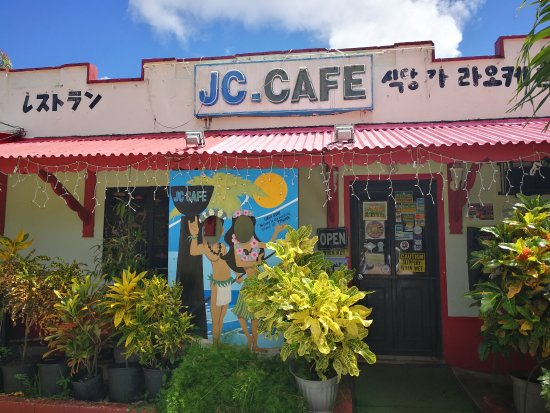
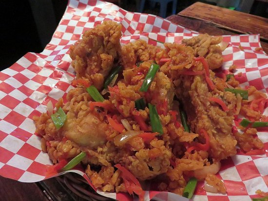
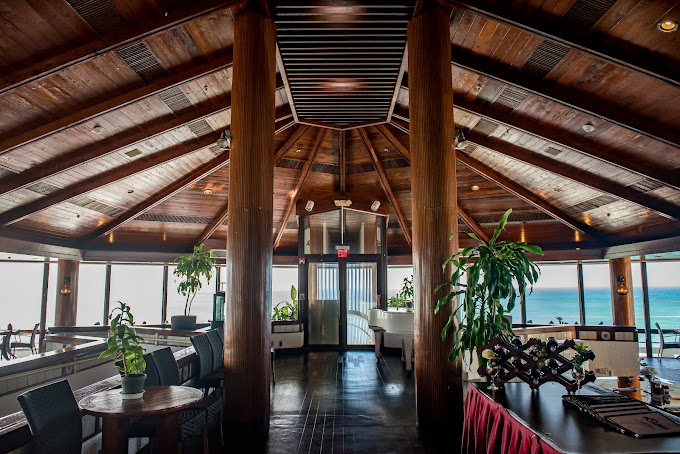

Must try restaurants!
These are just 2 of a few of my favorite restaurants, one located back at my hometown in the island of Tinian, and my other favorite restaurants is located where I currently reside in Saipan. Both restaurants hold a special meaning to me and everyone in my life.
- JC Cafe and Restaurant–Location:Tinian
- Dolphin Resataurant–Location: Saipan, Top floor of Hafa adai' Beach Hotel
JC CAFE and Restaurant
Located in the island of Tinian, JC Cafe is a family oriented restaurants where people of all ages are welcome!
JC Cafe offers and serves a variety of cuisines, a mixture of Filipino and Chamorro cuisines, it's become a local favorite for everyone in the island and they are most known for their famous Buttered Chicken and for the locals, the Spicy Buttered Chicken.

Here is some of my favorite meals to order:
- Spicy Crispy Chicken Burger with fries
- Spicy Buttered Chicken with home made gravy
- Tapsilog - a Filipino dish made with marinated beef, eggs, and garlic fried rice.
Dolphin Restaurant
Dolphin restaurant is an amazing place to enjoy fine dining and a delicous set of cusine which range from a mixture of local and varites of Asian cuisines.
Dolphin restaurant has a variety of meals to offer such as their delicous pork cutlet, which comes in a set which includes:
- Soup of the dayorMiso soup
- Rice
- Salad
- Free bottomless iced tea